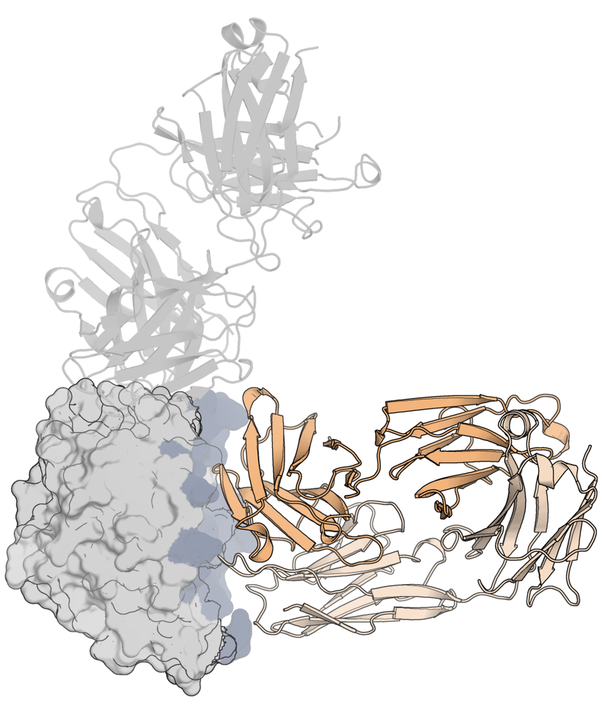
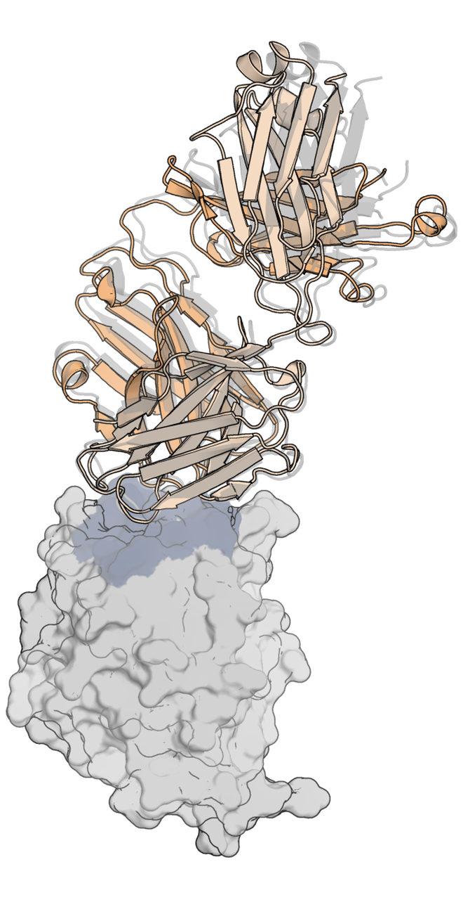

62.99%→70.13%
+7.14 pp97 → 108 / 154
Recursive research for more accurate,
more efficient antibody–antigen structure prediction.
High-quality antibody–antigen structures are difficult to obtain at scale. Sequence pairs, epitope annotations, and a model’s own predictions hold further opportunities for learning.
We introduce RSIP: a recursive research framework that connects data construction, model refinement, and inference optimization. A language-model agent turns validated improvements into the starting point for the next experiment.
A fixed language-model agent.
Evolving data, predictors, and inference workflows.
Compare prediction quality across four matched panels. Explore the datasets and DockQ thresholds to see where the gains occur.
Local models share targets, candidate budgets, and aggregation within each panel. * External per-case predictions retain their original prediction protocols. +T / −T indicate templates on / off. Common panels exclude unavailable predictions and OOM cases; denominators differ. Mol-1-RSI is shown for matched FoldBench acceptable success; exact tier counts are unavailable in the source tables.
Matched FoldBench · 101 complexes / 154 interfaces
Acceptable or better · DockQ ≥ 0.23
Light gray marks the starting model; the darker extension shows the RSIP gain. Tracks run from 0 to 100%. Counts are successful interfaces; gains use unrounded rates. CereFold was trained from scratch by CereBio; its refined model is CereFold-pro.
Better candidates and better selection shape the final prediction. Explore what changes from 1 to 1,000 seeds.
Confidence-ranked high-quality success · DockQ ≥ 0.80
Five candidates per seed. Curves average ten random seed orderings; shading is their minimum–maximum range, not a confidence interval. Oracle requires ground-truth structures. This panel differs from the benchmark and cost cohorts.
This is a finite-panel quality comparison, not a 1,000-fold runtime speedup.
Structure prediction is both an outcome and a tool for generating supervision and evaluating models. More efficient inference expands the structural hypotheses a fixed budget can explore.
Compare sampling quality ↑Median paired model-stage speedup
IQR 5.22–5.63×
Mean model time per seed · 5 candidates · A100 80GB
96 complexes / 147 interfaces. Model-stage timing excludes warm-up, compilation, and upstream MSA/template search. Candidate capacity is derived from mean model time, not measured campaign counts. The median cached-workflow speedup is 3.53×; full sequence-to-result time remains unmeasured.
Four selected cases illustrate changes in antibody placement and native-contact recovery. Choose a case to inspect the aligned structures.


Pairs share antigen alignment, camera, and scale; predicted antigens are hidden. The reference epitope is gray-blue. Cases were selected for RSI DockQ ≥ 0.80 and baseline ≤ 0.49; they do not estimate improvement frequency. Contact recovery uses a 5 Å heavy-atom residue-pair cutoff and is not DockQ’s Fnat.
Higher ranked success does not mean every target improves. Understanding these trade-offs is essential to making recursive improvement more reliable.
At 1,000 seeds, high-quality oracle coverage rises from 58.48% to 63.16%, while acceptable coverage falls from 96.49% to 91.23%. Twelve interfaces are baseline-only successes; three are RSI-only. Generation and selection remain distinct opportunities.
The results combine data, parameter, and workflow changes; their individual contributions are not isolated. Converting extra sampling into reliable supervision and demonstrating sustained multi-round gains require further experiments. Mol-1’s matched FoldBench result is 75.32% → 79.22%; its separate full-panel comparison and preliminary speedup still require complete protocol alignment.
Final benchmarks are excluded from training, agent feedback, and checkpoint selection. A shared PDB cutoff does not establish complete independence from homologous structures, related records, or knowledge in external predictors. The report documents OOM exclusions, aggregation, and remaining provenance audits.
Better inference enables better data.
Better data enables better models.
Better models enable better inference.
Explore the framework, interactive results, and selected structural cases.
Four benchmark panels · Three starting models
Code and future releases · GitHub
Four cases · Aligned structures and contact recovery
CereBio Team. RSIP: A Recursive Research Framework for Antibody–Antigen Structure Prediction. Technical report, November 2026.